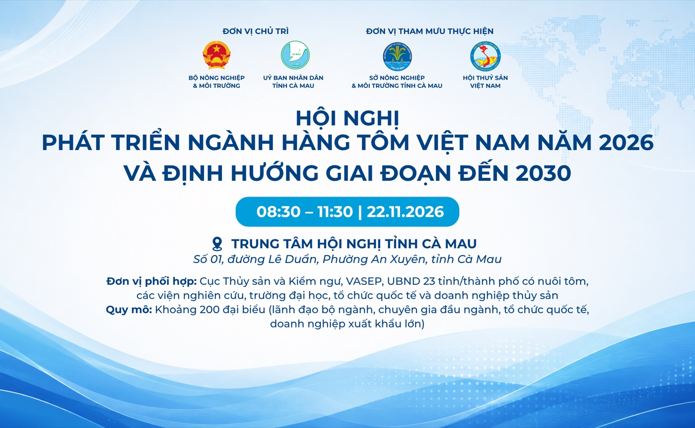

Hội nghị: Phát triển ngành hàng tôm Việt Nam năm 2026 và định hướng giai đoạn đến 2030
- Cơ quan Đồng chủ trì:
- Bộ Nông nghiệp và Môi trường & Ủy ban nhân dân tỉnh Cà Mau.
- Đơn vị tham mưu thực hiện:
- Sở Nông nghiệp và Môi trường tỉnh Cà Mau phối hợp Hội Thủy sản Việt Nam (VINAFIS).
- Đơn vị phối hợp:
- Cục Thủy sản và Kiểm ngư, VASEP, UBND 23 tỉnh/thành phố có nuôi tôm, các viện nghiên cứu, trường đại học, tổ chức quốc tế và doanh nghiệp thủy sản.
- Quy mô:
- Khoảng 200 đại biểu (lãnh đạo bộ ngành, chuyên gia đầu ngành, tổ chức quốc tế, doanh nghiệp xuất khẩu lớn).
